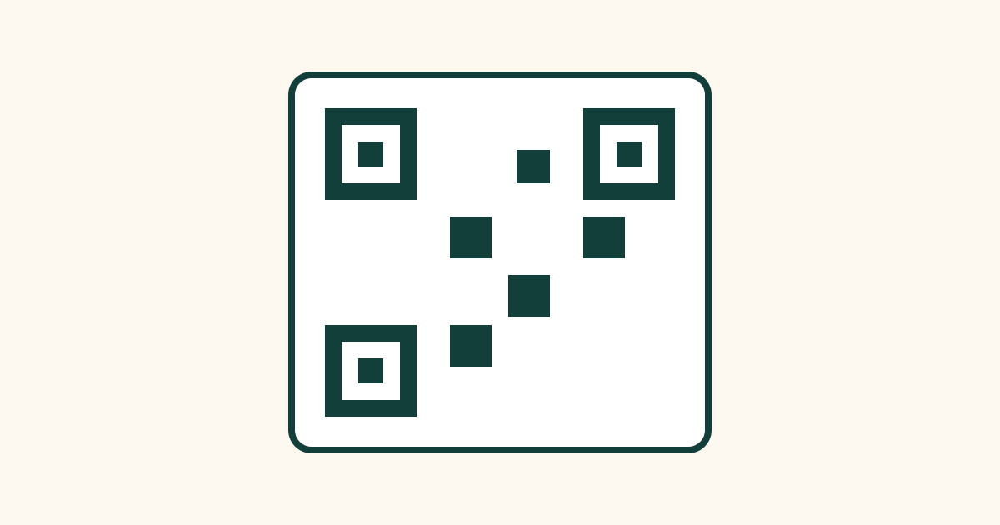

How Barcodes and QR Codes Store Information

At a shop checkout, a beep sounds and the price appears. On a poster, you point your phone camera at a square pattern and a website opens. Both moments rely on the same basic idea: information stored as a pattern of dark and light marks that a machine can read much faster than a person can type. Barcodes and QR codes are two versions of that idea, one older and simpler, the other newer and far more powerful.
Neither code contains a picture of the product or the website inside it in the way a photograph does. Instead, each pattern encodes numbers, letters, or other data in a precise arrangement. A scanner or camera reads the pattern, decodes it, and then looks up or uses the information it finds. Understanding the difference between the two helps explain why shops still use barcodes, and why QR codes have become so common everywhere else.
How a Traditional Barcode Works
A traditional barcode, the kind you see on most packaged food and books, is a series of vertical black bars and white spaces of different widths. Each bar and space represents part of a number. A scanner shines a light, usually a red laser or LED, across the barcode and measures how much light is reflected back. Black bars absorb light, white spaces reflect it, and the scanner records the pattern of light and dark as it moves across the code.
The scanner then converts that pattern into digits. Most retail barcodes encode a product number, not the price itself. When the checkout system receives that number, it looks it up in a database and finds the product name and current price. That is why the same barcode can show a different price during a sale: the code has not changed, only the price stored in the shop's database has changed.
Barcodes are one-dimensional because information is stored only from left to right. They can hold a limited amount of data, usually around 20 to 30 characters, which is enough for a product number but not enough for a long message or a website address. They must also be scanned in a fairly straight line, and if a bar is damaged or covered, the code may become unreadable.
How a QR Code Works
QR stands for Quick Response, and a QR code stores information in two dimensions, both across and down. Instead of bars, it uses a grid of small black and white squares, called modules. Each square is like a tiny pixel that is either on or off, and together they encode data in binary form, the language of ones and zeros used by computers.
A QR code can hold much more information than a barcode, up to a few thousand characters, depending on its size and version. That is enough for a website address, a block of text, a Wi-Fi password, contact details, or payment information. When you scan a QR code, your phone decodes the pattern and then acts on the result, for example by opening a link, showing text, or saving a contact.
QR codes also contain built-in clues to help scanners read them quickly. In three corners, you will see larger square patterns, called finder patterns. These tell the scanner where the code is, which way up it is, and how large it is, so it can be read even if it is tilted, photographed at an angle, or printed on a curved surface.
Why QR Codes Still Work When Damaged
One of the cleverest features of QR codes is error correction. When a QR code is created, extra information is added that acts like a backup. If part of the code is scratched, covered by a logo, or printed imperfectly, the scanner can often reconstruct the missing pieces from this backup information and still read the code correctly.
What Happens After You Scan a Code?
Scanning is only the first step. The scanner or phone must then decide what to do with the decoded information. For a shop barcode, the system looks up the product number in a database. For a QR code containing a website address, the phone usually asks if you want to open the link, rather than opening it automatically, as a safety step.
Common Misconceptions About Barcodes and QR Codes
One common misconception is that a barcode contains the price of a product. It usually does not. It contains a product identifier, and the price comes from the shop's system. That is why prices can change without reprinting every barcode.
Another misconception is that every QR code is safe simply because it looks official. A QR code can be printed by anyone, and a sticker placed over a genuine code can redirect you to a different website. Always preview the destination before opening it, and be cautious with codes asking for passwords or payments.
Frequently Asked Questions
Can I create my own QR code for free?
Yes. Many free websites and apps can generate a QR code from a link, text, or contact details. The code you create is simply a pattern encoding the information you entered, and it does not need a special licence to use for personal or many business purposes.
Why do some barcodes not scan on the first try?
Common reasons include a damaged or wrinkled label, glare from shiny packaging, a scanner held too far away or at a sharp angle, or a barcode printed too small. Moving the item slightly, flattening the label, or reducing glare usually helps the scanner read the pattern.
Do QR codes expire?
A static QR code, which directly encodes a link or text, does not expire on its own. It will keep working as long as the link or information it points to still exists. A dynamic QR code, which points to a service that redirects to another address, can stop working if that service is turned off or the subscription ends.
Can a barcode be used to track a product?
Yes, in a limited way. Because each product type has its own barcode, shops and warehouses can record when items are sold, shipped, or stocked. Individual items of the same product usually share the same barcode, so tracking is by product type rather than by one unique item, unless a serial number barcode is also used.
Conclusion
Barcodes and QR codes are both ways of writing information in a form machines can read quickly and accurately. Barcodes use lines to store a short product number, while QR codes use a grid of squares to store much more data, with built-in patterns to help scanners find them and error correction to help them survive damage.
The next time you hear a checkout beep or scan a square on a poster, you will know what is really happening: light and dark marks, decoded in a fraction of a second, turning a printed pattern into useful information.